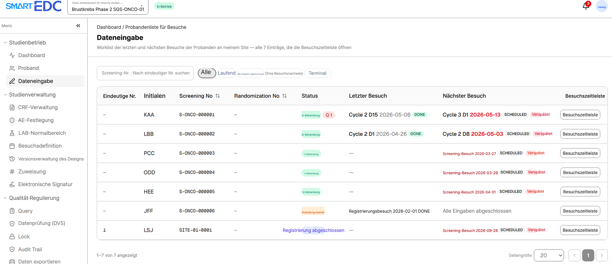
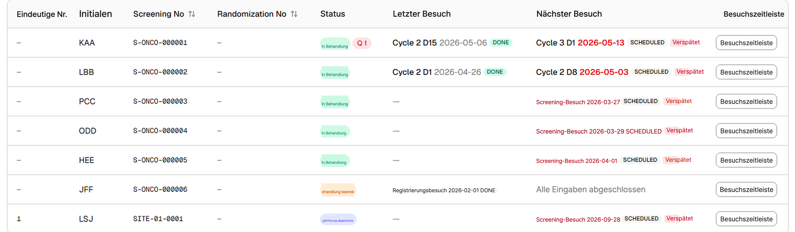
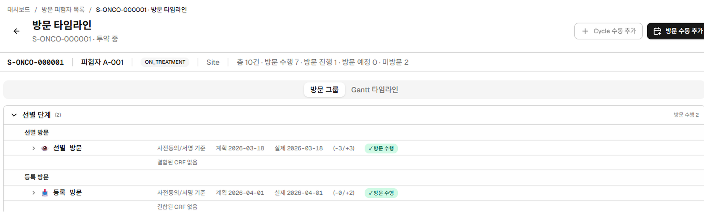
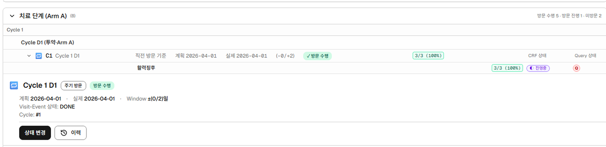
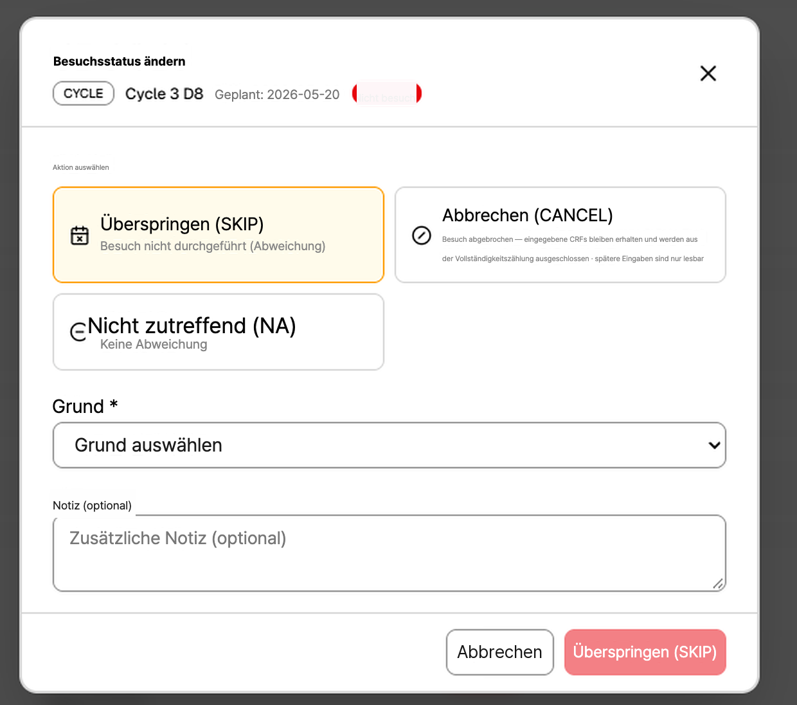
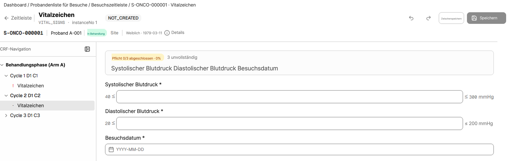
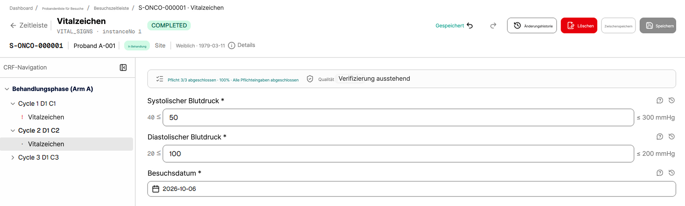
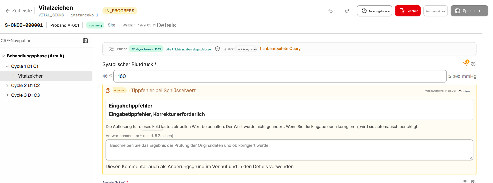

Dateneingabe
SCR-VISIT-010·003·007 · SCR-CRF-005 · Worklist · Besuchszeitleiste · CRF-Eingabe · Query-Antwort
Liste der Dateneingabe
- 1.1Bildschirmaufbau
- 1.2So lesen Sie die Liste
1.1Bildschirmaufbau
Überblick
Dies ist der Bildschirm, den Personen, die täglich Daten eingeben, zuerst öffnen. Für jeden betreuten Probanden fasst er den zuletzt durchgeführten Besuch und den nächsten geplanten Besuch in einer Zeile zusammen, damit Sie auf einen Blick sehen, was heute zu tun ist. Die eigentliche Eingabe erledigen Sie nicht direkt in dieser Liste. Sie gehen über die Besuchszeitleiste zur CRF des jeweiligen Besuchs und führen die Eingabe dort aus.
Bildschirmbeschreibung

Linkes Menü Studienbetrieb > Dateneingabe — jederzeit verfügbarer Einstieg in diesen Bildschirm.
Suche — Grenzt die Zeilen nach Screening No oder eindeutiger Nummer ein.
Statusfilter mit 5 Optionen — Alle · Laufend · Alle Eingaben abgeschlossen · Ohne Besuchsnachweis · Terminal. Die Bedeutung der einzelnen Kategorien entnehmen Sie der Tabelle in 1.2.
Besuchszeitleiste ▶ — Öffnet alle Besuche dieses Probanden 2.1. Wenn Sie eine beliebige Stelle der Zeile auswählen, gelangen Sie zum selben Bildschirm.
Der Pfad lautet Dashboard / Probandenliste für Besuche.
Unter dem Titel werden die Erläuterung zu dieser Liste und die Gesamtzahl angezeigt. Für Rollen mit fester Site-Zuordnung wird zusätzlich das Badge Meine Site fixiert angezeigt. Dann beschränkt sich die Liste automatisch auf die Probanden der eigenen Site.
Status-Spalte — Aktueller Status des Probanden und Anzahl der unbearbeiteten Queries 1.2.
Letzter Besuch-Spalte — Der zuletzt abgeschlossene Besuch und das tatsächliche Besuchsdatum.
Nächster Besuch-Spalte — Der nächste noch nicht abgeschlossene geplante Besuch und das geplante Datum. Die Daten der beiden Spalten beruhen auf unterschiedlichen Grundlagen 1.2.
Anzeigeanzahl · Seitengröße · Seitenwechsel — werden zusammen am unteren Rand der Liste angezeigt.
Zugriffspfade
- • Linkes Menü Studienbetrieb > Dateneingabe
- • Zeile im Widget Heute geplante Besuche des Projekt-Dashboards
- • Im Widget Heute geplante Besuche des Projekt-Dashboards: Besuchs-Worklist →
- • Im Widget Besuchsstatus des Projekt-Dashboards: Zeitleiste
Zu beachten
Leicht missverständliches Verhalten
- • Für Rollen mit fester Site-Zuordnung (Hauptprüfer (PI), Studienpflegekraft und Klinischer Monitor (CRA)) werden nur die Probanden der eigenen Site angezeigt. Fehlt ein Proband, den Sie in der Liste erwarten, prüfen Sie zuerst die Site-Zuordnung. Suche und Filter können Probanden außerhalb Ihres Bereichs nicht anzeigen.
1.2So lesen Sie die Liste
Überblick
Eine Zeile steht für einen Probanden. Die beiden mittleren Felder sind das Herzstück dieses Bildschirms. Links steht der bereits abgeschlossene Besuch, rechts der noch bevorstehende Besuch. Beide Felder und die Aktionsspalte führen zur Besuchszeitleiste dieses Probanden. Wenn Sie ein Besuchsfeld auswählen, öffnet sich die Zeitleiste mit diesem Besuch bereits ausgewählt.
Bildschirmbeschreibung

Letzter Besuch-Feld — Bei Auswahl öffnet sich die Zeitleiste mit diesem Besuch ausgewählt. Das Datum neben dem Besuchsnamen ist das tatsächliche Besuchsdatum.
Nächster Besuch-Feld — Bei Auswahl öffnet sich die Zeitleiste mit diesem Besuch ausgewählt. Das Datum neben dem Besuchsnamen ist das geplante Datum.
Besuchszeitleiste ▶ — Öffnet alle Besuche dieses Probanden, ohne einen bestimmten Besuch auszuwählen.
Status — Der aktuelle Verlaufsstatus des Probanden (z. B. „Unter Studienmedikation“ · „Behandlung beendet“ · „Registrierung abgeschlossen“).
Q N — Anzahl der unbearbeiteten Queries dieses Probanden. Bei 0 wird nichts angezeigt.
DONE — Kennzeichnung „abgeschlossen“, die nur im Feld Letzter Besuch erscheint.
SCHEDULED und Verspätet — SCHEDULED bedeutet, dass der Besuch geplant ist. Verspätet ist eine Warnung, dass der Besuch das zulässige Zeitfenster (Window) überschritten hat. Ein Besuch, der gerade in das Zeitfenster eingetreten ist, zeigt Bald fällig an.
Alle Eingaben abgeschlossen — Es gibt Besuchsdaten, und es steht kein weiterer Besuch an. Verwechseln Sie diesen Status nicht mit Kein geplanter Besuch (orange) (siehe Tabelle unten).
Statusfilter, vier Arten (ohne Alle)
| Filter | Zeilen in dieser Kategorie | Aufgabe |
|---|---|---|
| Laufend | Probanden, für die noch ein nächster Besuch aussteht | Besuch und Eingabe zum geplanten Datum durchführen |
| Alle Eingaben abgeschlossen | Probanden mit Besuchsdaten und ohne weiteren Besuch | Keine — regulärer Abschlussstatus |
| Ohne Besuchsnachweis | Probanden, für die weder Besuchsdaten noch geplante Besuche vorliegen | Handlungsbedarf — Ursache prüfen, warum keine Besuche angelegt wurden |
| Terminal | Probanden in einem festen Abschlussstatus | Keine — nur Ansicht möglich |
Zu beachten
Unbedingt prüfen Datenschäden · Formular nicht abschließbar
- • „Alle Eingaben abgeschlossen“ und „Kein geplanter Besuch“ bedeuten das Gegenteil. Ersteres heißt: Es gibt nichts mehr zu tun. Letzteres heißt: Es wurde kein einziger Besuch angelegt, und die Ursache muss gefunden werden. Beide Texte erscheinen im selben Feld. Prüfen Sie deshalb Farbe (grau · orange) und Text gemeinsam.
Besuchszeitleiste
- 2.1Aufbau der Zeitleiste
- 2.2Besuchszeilen und CRF-Zeilen
- 2.3Besuchsstatus ändern
- 2.4Ergebnis der Überspringung
2.1Aufbau der Zeitleiste
Überblick
Dieser Bildschirm zeigt alle Besuche eines Probanden in der Reihenfolge des Studienplans. Die Besuche sind in Gruppen wie Screening-Phase · Behandlungsphase zusammengefasst. Bei periodischer Behandlung werden sie darin außerdem in Cycle unterteilt. Sowohl die Dateneingabe als auch die Änderung des Besuchsstatus beginnen auf diesem Bildschirm.
Bildschirmbeschreibung

Cycle manuell hinzufügen — Legt zusätzlich zu den definierten Zyklen einen weiteren Cycle an. Auswählbar ist die Option erst, wenn der vorherige Cycle abgeschlossen ist.
Besuch manuell hinzufügen — Fügt einen nicht geplanten Besuch hinzu (ungeplante oder fortlaufende Besuche).
Registerkarte Gantt-Zeitleiste — Zeigt denselben Inhalt als Terminbalken. Standard ist die Registerkarte Besuchsgruppen.
Der Pfad lautet Dashboard / Probandenliste für Besuche / Proband · Besuchszeitleiste. Wenn Sie von der Probandenansicht aus kommen, unterscheidet sich der Pfad.
Kopfzeile zur Identifikation des Probanden — Screening No · Probandennummer · Probandenstatus · Site.
Besuchszählung — Gesamt · Besuch durchgeführt · Besuch läuft · Besuch geplant · Nicht besucht. Solange ein Besuch als nicht besucht gilt, müssen Sie ihn zuerst bereinigen 2.3.
Besuchsgruppe — Ein großer Abschnitt des Studienplans. Die Zahl in Klammern ist die Anzahl der Besuche in dieser Gruppe. Über den Titel lässt sich die Gruppe ein- und ausklappen.
Zählung rechts neben der Gruppe — Anzahl je Status innerhalb dieser Gruppe.
Aufbau einer Besuchszeile — angezeigt in dieser Reihenfolge: Bezugspunkt · geplantes Datum · tatsächliches Datum · zulässiger Zeitraum · Statusbadge.
Keine verknüpfte CRF — Diesem Besuch ist keine CRF zugeordnet. Für diesen Besuch gibt es also keine Daten einzugeben. Die Zuordnung verwalten Sie über die CRF-Zuordnung in der Besuchsdefinition.
Zugriffspfade
- • Liste der Dateneingabe → Zeile auswählen oder Besuchszeitleiste ▶ 1.2
- • Liste der Dateneingabe → Feld Letzter Besuch oder Nächster Besuch (öffnet mit diesem Besuch ausgewählt)
- • Probandenliste → Aktionsmenü der Zeile → Besuche
- • Widget Besuchsstatus im Projekt-Dashboard → Proband auswählen
Zu beachten
Leicht missverständliches Verhalten
- • „Nicht besucht“ in der Besuchszählung verschwindet nicht von selbst. Einen Besuch, dessen geplantes Datum überschritten ist, müssen Sie entweder durchführen oder mit Begründung als Überspringen, Abbrechen oder Nicht zutreffend bereinigen 2.3. Unbereinigte Besuche mit dem Status „Nicht besucht“ werden als unvollständige Daten dieses Probanden gezählt.
2.2Besuchszeilen und CRF-Zeilen
Überblick
Wenn Sie das Aufklapp-Symbol links in der Besuchszeile auswählen, erscheinen die mit diesem Besuch verknüpften CRFs zeilenweise. Wenn Sie eine CRF-Zeile auswählen, gelangen Sie zur Eingabemaske 3.1. Wenn Sie eine Besuchszeile auswählen, öffnen sich unten auf dem Bildschirm die Details dieses Besuchs. Dort ändern Sie den Status und prüfen den Verlauf.
Bildschirmbeschreibung

Besuchszeile — Bei Auswahl öffnen sich unten die Details dieses Besuchs. Über das Aufklapp-Symbol links klappen Sie die Liste der verknüpften CRFs auf.
CRF-Zeile — Bei Auswahl gelangen Sie zur Eingabemaske dieser CRF 3.1.
Status ändern — Hält fest, ob der Besuch durchgeführt wurde, oder bereinigt ihn als Überspringen, Abbrechen oder Nicht zutreffend 2.3.
Verlauf — Zeigt die Statusänderungen dieses Besuchs an.
Gruppentitel mit Anzahl der Besuche. Ist ein Studienarm vorhanden, wird er ebenfalls angezeigt, z. B. Behandlungsphase (Arm A).
Zählung rechts neben der Gruppe — Anzahl je Status in dieser Gruppe.
Cycle und die Besuche darin. Bei periodischer Behandlung wiederholt sich derselbe Besuch in jedem Cycle.
Zählung der Pflichtfeldzählung pro Besuch — wie viele Pflichtfelder der mit diesem Besuch verknüpften CRFs ausgefüllt sind.
Spaltenköpfe CRF-Status und Query-Status — Die Badges in den CRF-Zeilen darunter zeigen beide Angaben.
Badges in der CRF-Zeile — von links: Pflichtfeldzählung · Eingabestatus · Query-Anzeige. Wird Q angezeigt, liegt für diese CRF eine zu bearbeitende Query vor 3.3.
Kopfbereich der Details des gewählten Besuchs — Besuchsname · Besuchsart · aktueller Status.
Wichtige Werte der Details — geplantes Datum · tatsächliches Datum · zulässiger Zeitraum (Window) · Visit-Event-Status · Cycle-Nummer.
Zu beachten
Leicht missverständliches Verhalten
- • Die Zählung in der Besuchszeile und die Zählung in der CRF-Zeile haben unterschiedliche Reichweiten. Die Besuchszeile summiert alle mit dem Besuch verknüpften CRFs, die CRF-Zeile zeigt nur den Wert dieser einen CRF. Wenn ein Besuch mit 100% angezeigt wird und nur eine CRF verknüpft ist, ergibt sich dieselbe Zahl. Prüfen Sie deshalb, welche Zahl Sie gerade sehen, bevor Sie urteilen.
2.3Besuchsstatus ändern
Überblick
Dieser Dialog dient dazu, Besuche zu bereinigen, deren geplantes Datum überschritten ist und die nicht durchgeführt wurden. Es werden nur die Aktionen angezeigt, die im aktuellen Status möglich sind. Wie in der Abbildung erscheinen bei dem Status Nicht besucht drei Aktionen: Überspringen, Abbrechen und Nicht zutreffend. Welche Aktion Sie auch wählen, die Angabe eines Grundes ist Pflicht. Der Vorgang wird im Audit Trail protokolliert.
Bildschirmbeschreibung

Überspringen (SKIP) — Hält fest, dass der Besuch selbst nicht durchgeführt wurde. Er wird als Abweichung (Deviation) erfasst.
Abbrechen (CANCEL) — Eingegebene CRFs werden nicht gelöscht. Sie werden nur aus der Vollständigkeitszählung ausgenommen, und danach sind sie nur noch zur Ansicht verfügbar.
Nicht zutreffend (NA) — Der Besuch betrifft diesen Probanden nicht. Er wird nicht als Abweichung erfasst.
Grund — Pflichtfeld. Beim Überspringen wählen Sie den Grund aus der im Projekt hinterlegten Gründeliste. Lässt sich die Liste nicht laden, erscheint stattdessen ein freies Eingabefeld.
Notiz — Optionales Feld. Verwenden Sie es, wenn der Grund aus der Liste allein nicht ausreicht.
Schaltfläche Ausführen — Zeigt den Namen der gewählten Aktion an. Solange kein Grund ausgewählt ist, ist sie abgeblendet und nicht anklickbar. Die daneben stehende Abbrechen schließt nur das Fenster.
Betroffener Besuch — Besuchsart · Besuchsname · geplantes Datum · aktueller Status. Prüfen Sie, dass das Statusbadge „✕ Nicht besucht“ zeigt, bevor Sie fortfahren.
Schließen — Schließt das Fenster.
Aktion auswählen — Die gewählte Karte erhält einen farbigen Rahmen. Wenn Sie die Karte wechseln, werden der eingegebene Grund und die Notiz zurückgesetzt.
Der * neben Grund kennzeichnet ein Pflichtfeld.
Das (optional) neben Notiz bedeutet, dass Sie das Feld leer lassen können.
Vier Aktionen — es werden nur die zur Situation passenden angezeigt
| Aktion | Angezeigt bei | Als Abweichung erfasst | Rückgängig machen |
|---|---|---|---|
| Besuch als durchgeführt erfassen | Wenn der Besuch läuft | Wird anhand des Durchführungsdatums beurteilt | Nicht rückgängig machbar |
| Überspringen (SKIP) | Nicht besucht · keine Durchführung erfasst | Ja | Wiederherstellbar |
| Abbrechen (CANCEL) | Nicht besucht oder läuft | Nein | Wiederherstellbar |
| Nicht zutreffend (NA) | Nicht besucht · keine Durchführung erfasst | Nein | Wiederherstellbar |
Zu beachten
Unbedingt prüfen Datenschäden · Formular nicht abschließbar
- • Wenn Sie einen periodischen Cycle-Besuch abbrechen, können Sie keinen weiteren Cycle mehr hinzufügen. Als Abschluss gelten nur Besuch durchgeführt, Überspringen und Nicht zutreffend, Abbrechen gehört nicht dazu. Einen falsch angelegten Cycle bereinigen Sie deshalb nicht durch Abbrechen, sondern durch Nicht zutreffend.
2.4Ergebnis der Überspringung
Überblick
Wenn Sie Überspringen ausführen, schließt sich das Fenster und Sie kehren zur Zeitleiste zurück. Das Statusbadge dieser Besuchszeile ändert sich, und der Besuchsname wird durchgestrichen. So erkennen Sie den Besuch in der Liste sofort. Das tatsächliche Datum bleibt durchgehend leer. Den eingegebenen Grund finden Sie im Verlauf dieses Besuchs 2.2.
Bildschirmbeschreibung

Die Gruppe und der Cycle, zu denen der Besuch gehört. Das Überspringen betrifft nur diesen einen Besuch und wirkt sich nicht auf andere Besuche derselben Gruppe aus.
Besuchszeile — Der Besuchsname erscheint mit Durchstreichung.
In der Mitte der Zeile bleibt das tatsächliche Datum bei —. Der zulässige Zeitraum daneben bleibt unverändert wie geplant.
Ganz rechts in der Zeile ⊘ Übersprungen — Anzeige des Ergebnisses der Überspringung. Zum Rückgängigmachen wählen Sie den Besuch erneut aus und führen Status ändern > Wiederherstellen aus.
Keine verknüpfte CRF — Diesem Besuch ist keine CRF zugeordnet. Das ist eine eigenständige Anzeige und hat mit dem Überspringen nichts zu tun.
Sieben Statusbadges für Besuche
| Badge | Bedeutung | Eingabe möglich |
|---|---|---|
| ○ Besuch geplant | Besuch, dessen geplantes Datum noch bevorsteht | Ja |
| ◐ Besuch läuft | Besuch, dessen Durchführung begonnen hat | Ja |
| ✓ Besuch durchgeführt | Besuch, der abgeschlossen ist | Ja |
| ✕ Nicht besucht | Besuch, dessen geplantes Datum überschritten ist und der noch nicht bereinigt wurde | Ja — Bereinigung erforderlich |
| ⊘ Übersprungen | Besuch, der als nicht durchgeführt erfasst wurde (Abweichung) | Nein |
| ⊗ Abgebrochen | Abgebrochener Besuch — bestehende CRFs bleiben erhalten | Nur Ansicht |
| – Nicht zutreffend | Besuch, der für diesen Probanden nicht zutrifft | Nein |
Zu beachten
Unbedingt prüfen Datenschäden · Formular nicht abschließbar
- • Überspringen wird als Abweichung (Deviation) gezählt. Sie können es zwar rückgängig machen, aber sowohl die Bearbeitung als auch die Wiederherstellung bleiben im Verlauf erhalten. Verwenden Sie die Aktion deshalb nicht zum Ausprobieren, ohne den Grund zu prüfen. Kann der Besuch noch durchgeführt werden, ändern Sie den Status nicht und lassen Sie ihn unverändert.
CRF-Dateneingabe
- 3.1Eingabemaske
- 3.2Speichern abgeschlossen
- 3.3Query-Antwort
3.1Eingabemaske
Überblick
Auf diesem Bildschirm geben Sie die tatsächlichen Daten ein. Links liegt der Navigationsbereich, mit dem Sie zwischen den CRFs desselben Probanden wechseln. Rechts liegt der Eingabebereich. Beim ersten Öffnen sind noch keine Daten angelegt. Die Daten entstehen erst, wenn Sie speichern — wenn Sie den Bildschirm nur öffnen und wieder verlassen, bleibt nichts zurück.
Bildschirmbeschreibung

Systolischer Blutdruck — Zahlenfeld. Die Werte links und rechts am Feld zeigen den zulässigen Bereich.
Diastolischer Blutdruck — Eingabe auf dieselbe Weise.
Besuchsdatum — Wählen Sie das Datum über das Kalendersymbol aus oder geben Sie es direkt ein.
Zwischenspeichern — Bewahrt die laufende Eingabe vorläufig auf. Es erfolgt keine Prüfung, und es wird auch kein Audit-Trail-Eintrag erstellt. Deshalb ist das keine endgültige Speicherung.
Speichern — Bestätigt die Eingabe. Dabei werden die Daten angelegt, und Prüfung sowie Audit-Trail-Protokoll laufen gemeinsam ab 3.2.
Der Pfad lautet Dashboard / Probandenliste für Besuche / Besuchszeitleiste / Proband · CRF-Name.
NOT_CREATED — Kennzeichnet, dass noch nie gespeichert wurde. Nach dem Speichern wechselt der Status zu IN_PROGRESS oder COMPLETED 3.2.
CRF-Code und Wiederholungsnummer. Bei CRFs, die im selben Besuch wiederholt erfasst werden, erhöht sich die Wiederholungsnummer.
Kopfzeile zur Identifikation — Screening No · Probandennummer · Status · Site · Geschlecht · Geburtsdatum. Über Details sehen Sie die Probandeninformationen.
CRF-Navigation — Wechseln Sie direkt zu anderen Besuchen oder CRFs desselben Probanden. Über das Einklappsymbol können Sie den Bereich ausblenden.
Die gerade geöffnete CRF ist hervorgehoben. Einträge mit einem Ausrufezeichen sind CRFs, bei denen noch etwas zu bearbeiten ist.
Pflichtfeldzählung — „0/3 abgeschlossen · 0%“ und die Anzahl der offenen Felder. Solange nicht alle Pflichtfelder ausgefüllt sind, wird die Eingabe nicht als abgeschlossen gezählt.
Liste der offenen Felder — Bei Auswahl springen Sie zum jeweiligen Eingabefeld. Verwenden Sie die Liste, um in einem umfangreichen Formular fehlende Felder zu finden.
Links und rechts vom Eingabefeld stehen der zulässige Bereich und die Einheit. Werte außerhalb des Bereichs werden bei der Prüfung beim Speichern beanstandet.
Zu beachten
Unbedingt prüfen Datenschäden · Formular nicht abschließbar
- • „Zwischenspeichern“ ist keine endgültige Speicherung. Zwischengespeicherte Inhalte werden nicht geprüft und nicht im Audit Trail protokolliert. Verlassen Sie den Bildschirm in diesem Zustand, zählen die Daten nicht als gültige Daten. Haben Sie die Eingabe abgeschlossen, bestätigen Sie sie unbedingt mit Speichern.
3.2Speichern abgeschlossen
Überblick
Mit dem Speichern werden die Daten angelegt, und an mehreren Stellen des Bildschirms ändern sich die Anzeigen. Da Sie alle Pflichtfelder ausgefüllt gespeichert haben, ist der Eingabestatus abgeschlossen. Weil noch keine Prüfung erfolgt ist, lautet der Qualitätsstatus Verifizierung ausstehend. Mit den Daten erscheinen außerdem Änderungshistorie und Löschen.
Bildschirmbeschreibung

Speichern — Bestätigt die Eingabe.
Der Status wechselt zu COMPLETED, und Gespeichert wird angezeigt. Waren noch Pflichtfelder offen, lautet der Status IN_PROGRESS.
Änderungshistorie — Zeigt, wer wann welchen Wert wie geändert hat. Die Funktion erscheint erst, wenn Daten gespeichert wurden.
Löschen — Nimmt die eingegebenen Daten zurück. Der Vorgang bleibt protokolliert, und ein Grund ist anzugeben.
Pflichtfeldzählung wechselt zu „3/3 abgeschlossen · 100%“ und „Alle Pflichteingaben abgeschlossen“.
Qualitätsstatus — Verifizierung ausstehend. Nach Abschluss des Quelldatenabgleichs (SDV) wechselt er zu SDV abgeschlossen. Gibt es außerdem keine zu bearbeitenden Queries mehr, lautet er CLEAN.
Zwei Symbole an jedem Feld — links die Query zu diesem Feld, rechts die Änderungshistorie dieses Feldes. Sie werden erst angezeigt, nachdem Daten angelegt wurden.
Der gespeicherte Wert steht unverändert im Eingabefeld. Wenn Sie den Wert ändern und erneut speichern, wird ein Änderungsgrund verlangt.
In der CRF-Navigation ist die aktuelle CRF hervorgehoben.
Der Pfad ist wie vor dem Speichern — Speichern wechselt den Bildschirm nicht.
Eingabestatus und Qualitätsstatus — zwei getrennte Angaben
| Angabe | Anzeige | Bedeutung |
|---|---|---|
| Eingabestatus | NOT_CREATED | Noch nie gespeichert (keine Daten angelegt) |
| Eingabestatus | IN_PROGRESS | Gespeichert, aber Pflichtfelder fehlen noch |
| Eingabestatus | COMPLETED | Alle Pflichtfelder ausgefüllt und gespeichert |
| Qualitätsstatus | Verifizierung ausstehend | Quelldatenabgleich (SDV) noch nicht abgeschlossen |
| Qualitätsstatus | SDV abgeschlossen | SDV abgeschlossen, aber nicht vollständig oder Query noch offen |
| Qualitätsstatus | CLEAN | Eingabe abgeschlossen + SDV für alle Daten + keine offenen Queries |
Zu beachten
Leicht missverständliches Verhalten
- • Eingabe abgeschlossen und Qualität abgeschlossen sind nicht dasselbe. „3/3 abgeschlossen · 100%“ bedeutet nur, dass alle Pflichtfelder ausgefüllt sind. Ob der Wert mit den Quelldaten der medizinischen Einrichtung übereinstimmt, ist damit noch nicht geprüft. Damit die Daten endgültig festgelegt sind, müssen Quelldatenabgleich (SDV) und Query-Bearbeitung beide abgeschlossen sein.
3.3Query-Antwort
Überblick
Wenn ein eingegebener Wert eine Klärungsanfrage (Query) auslöst, klappt direkt unter dem Feld eine Antwortkarte auf. Den Wert ändern und die Antwort schreiben Sie an derselben Stelle. Ein einziges Speichern im Formular verarbeitet beides gemeinsam. Sie müssen nicht auf einen separaten Bildschirm wechseln, nur um die Antwort abzuschicken.
Bildschirmbeschreibung

Wert ändern — Stellt sich nach Prüfung der Quelldaten heraus, dass der Wert falsch ist, korrigieren Sie ihn direkt in diesem Feld.
Die Erledigungsart wechselt an dieser Stelle — ändern Sie den Wert, lautet sie Wert korrigiert, ändern Sie ihn nicht, lautet sie Beibehalten. Das wählen Sie nicht selbst aus, sondern es ergibt sich aus der Frage, ob der Wert geändert wurde.
Antwortkommentar — Pflichtfeld mit mindestens 5 Zeichen. Beschreiben Sie das Ergebnis der Prüfung der Quelldaten und ob der Wert geändert wurde.
Dieser Kommentar gilt zugleich als Änderungsgrund — Wurde der Wert geändert, ersetzt dieser Kommentar den sonst gesondert verlangten Änderungsgrund. Denselben Inhalt müssen Sie nicht zweimal eingeben.
Speichern — Wertänderung und Antwort werden gemeinsam verarbeitet. Es kann nicht passieren, dass nur die Antwort gespeichert wird und der Wert unverändert bleibt.
IN_PROGRESS — Da Sie den Wert gerade ändern, wird der Eingabestatus als laufend angezeigt.
Unbearbeitete Queries N — Anzahl der Queries in dieser CRF, die Sie beantworten müssen. Beantwortete, aber noch nicht abgeschlossene Queries werden separat als Abschluss ausstehend angezeigt.
Rechts neben dem Feld das Query-Symbol mit der Anzahl. Bei Auswahl sehen Sie die Queries dieses Feldes.
Kopfzeile der Karte — Bearbeitungsstatus · Priorität · Titel.
Zuständige Person und Einklappen. In Formularen mit vielen Feldern beginnt die Karte eingeklappt.
Text der Anfrage — Hier steht, was geklärt werden soll. Lesen Sie ihn unbedingt, bevor Sie antworten.
(mindestens 5 Zeichen) — Wird diese Bedingung nicht erfüllt, lehnt das System das Speichern ab.
Verlauf · Details anzeigen — Zeigt den gesamten Dialog und den Bearbeitungsverlauf dieser Query.
Zu beachten
Leicht missverständliches Verhalten
- • Queries kann nicht jeder beantworten. Sie brauchen eine Rolle mit Antwortberechtigung und müssen zugleich die zuständige Person oder die erfassende Person dieser Query sein. Sehen Sie die Karte, können Sie aber nichts eingeben, sind Sie vermutlich nicht die zuständige Person. Prüfen Sie dann in der Query-Liste, wer zuständig ist, und leiten Sie die Query weiter.